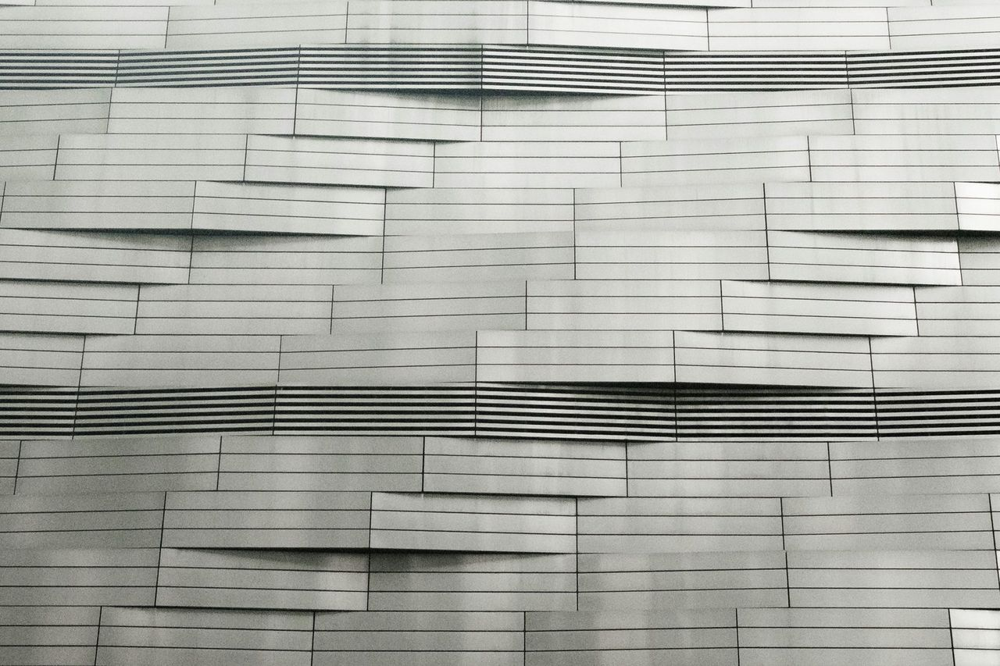

Diamond chip bullets
Brand strategy
Positioning, naming, and messaging that survive contact with real audiences.
Design systems
Tokens, components, and rules that keep every surface consistent.
The chip is a 9px rotated square in the accent. Numbered topics put the figure in bold before the title.
Photo masks

Pills cascade diagonally, arches stand on a ghost arc, frames hold straight cuts. Masks crop, they never tint.